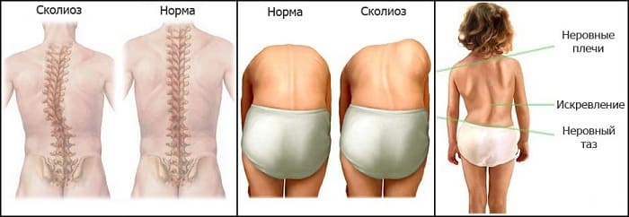
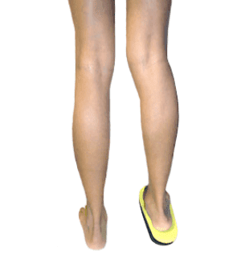

Хотя у каждого позвоночник немного искривлен, у некоторых он искривляется слишком сильно и в неправильном направлении. Сколиоз означает искривление позвоночника вбок. Чрезмерное искривление верхней части позвоночника вперед называется кифоз (горб), а чрезмерное искривление нижней части позвоночника называется поясничный лордоз (круглая спина). Легкая степень сколиоза (примерно на 10 градусов) безобидна и, как правило, не причиняет ребенку боли или затруднений. Если не выявить и не лечить более серьезные искривления (на 30 градусов или больше), они могут ограничивать движение грудной клетки и затруднять дыхание и работу сердца. Большинство случаев сколиоза идиопатические, что означает, что у них нет никакой особой причины. Этот тип сколиоза обычно становится очевиден во время препубертатного скачка роста, который, как правило, начинается примерно в 11 лет. Резкий рост позвоночника в это время делает любое искривление позвоночника более заметным. Легкий сколиоз может стать значительно выраженнее всего за несколько лет. Поэтому важно как можно раньше выявить даже легкий сколиоз во время скачка роста, чтобы можно было принять необходимые меры для сведения искривления к минимуму в подростковом возрасте.
Сколиоз также может быть врожденным, что означает, что ребенок родился с искривлением позвоночника вследствие недоразвитости некоторых позвоночных костей. Нервно-мышечный сколиоз означает, что мышцы на одной стороне тела сильнее, чем на другой, так что более сильные мышцы перетягивают растущий позвоночник на свою сторону. Несоответствие длины ног (одна нога короче другой) может привести к тому, что весь таз наклонится и позвоночник искривится. Этот тип сколиоза редко причиняет ребенку какой- либо вред, если разница в длине ног составляет не более 2,5 см. |

КАК ОПРЕДЕЛИТЬ
Хотя ваш врач будет проверять спину вашего ребенка для исключения слишком сильного искривления во время планового осмотра (особенно начиная примерно с 8 лет), вы также можете оценивать его дома.
Попробуйте тест наклона вперед. Ребенок должен стоять прямо перед вами, лицом к вам. Попросите его снять футболку, поставить ноги вместе, выпрямив колени, руки опустить свободно и постепенно наклоняться вперед, медленно опуская голову и сгибаясь так, чтобы он мог дотронуться до пальцев ног. Осмотрите его спину: не будет ли одна сторона («горб») выше, чем другая. Этот тест можно провести, посадив ребенка на стол, что исключит возникновение вторичного искривления позвоночника из-за разницы в длине ног, которая играет роль, если ребенок стоит. Пока ваш ребенок все еще согнут, обойдите вокруг него и посмотрите на горб сзади и сбоку. Если вы заметите лопатки на разном уровне или неровную талию, обратитесь с этой проблемой к врачу.
Проверка на разницу в длине ног. Ребенок должен стоять, поставив ноги вместе. Расположите свои указательные пальцы на тазовых костях в области талии. Если вы видите, что ваши пальцы не на одинаковом уровне, скорее всего одна нога длиннее другой. Оцените разницу в высоте между своими пальцами (например, 1 см, 2,5 см), затем положите книгу такой же ширины под ту ногу ребенка, которая, возможно, короче, и проведите повторный тест, чтобы проверить, исчезло ли искривление позвоночника.

КОГДА БЕСПОКОИТЬСЯ И ЧТО ДЕЛАТЬ
Если вы подозреваете искривление позвоночника, пусть ваш врач обязательно это проверит. Если он тоже подозревает искривление позвоночника, идиопатическое или вызванное разницей в длине ног, то назначит рентгеновские снимки спины. Они необходимы:
чтобы определить степень сколиоза;
в качестве точки отсчета, чтобы врач мог определить изменения искривления при последующих исследованиях.
Ваш врач также проведет тщательное обследование, чтобы убедиться, что искривление позвоночника не является следствием какой-либо медицинской проблемы. Если сколиоз значительный, как правило, больше 20 градусов, педиатр может направить вашего ребенка к ортопеду для составления плана лечения. В большинстве случаев идиопатический сколиоз выправляется самостоятельно после пубертатного периода. Но в редких случаях искривление может быстро прогрессировать во время скачка роста в подростковом возрасте, вот почему необходим бдительный контроль со стороны ортопеда.
СОВЕТ ДОКТОРОВ СИРС: ПОМОГИТЕ СВОЕМУ ВРАЧУ ПОСТАВИТЬ ДИАГНОЗ Хотя идиопатический сколиоз обычно не причиняет боли и не вызывает затруднений при движениях, некоторые формы сколиоза, особенно из-за деформаций позвонков, могут вызывать у ребенка повторяющуюся боль в спине. Поскольку «боль в спине» редко встречается у детей, обязательно расскажите об этом своему врачу. Повторяющаяся боль в спине у детей практически всегда удостаивается, по меньшей мере, рентгеновского обследования позвоночника, чтобы убедиться, что ни один из позвонков не сместился. |
Сейчас в школах часто проводят скрининг сколиоза. Это важная составляющая медицинского осмотра. Если искривление меньше 20 градусов, ортопед, как правило, рекомендует наблюдать и выжидать. Если искривление больше 20 градусов, он может порекомендовать ношение спинного корсета. Хотя корсет не выпрямляет позвоночник, он не дает ему искривляться еще больше, особенно во время скачков роста, и может избавить ребенка от хирургической коррекции. Хирургическое вмешательство необходимо при сильном сколиозе, когда искривление составляет больше 40 градусов.
Здоровье ребенка от докторов Сирс / Сирс У. и др.